UX Design
A corporate website redesign with measurable impact and three end-to-end UX projects covering research, wireframing, prototyping, and usability testing.

The Problem
A website that didn't match the brand — or serve the user.
UEi's existing website had grown organically over time without a coherent design system or user experience strategy. Navigation was inconsistent, product discovery was difficult, and the visual language didn't reflect the brand system being built across packaging and marketing materials. Users were struggling to find products, and the site wasn't converting.
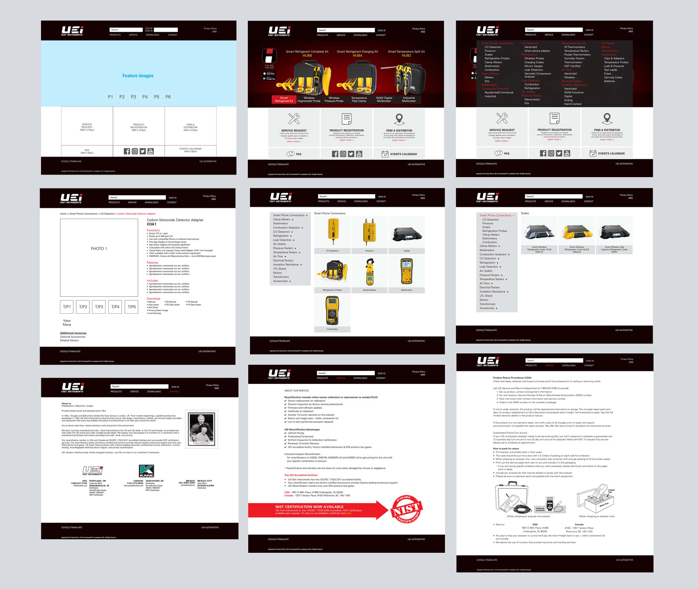
Full website redesign — homepage, product category pages, product detail pages, service pages, and about pages
The Process
Designed every page. Developer handled the code.
I owned the complete design of the redesigned site — information architecture, page layouts, component design, and visual system — working directly with a web developer who handled implementation. Every page was designed to align with the UEi brand system while prioritizing clear product navigation and an intuitive path from category to product detail.
The Result
Measurable improvement across every key metric.
The redesigned site delivered significant improvement across all three core performance metrics — with users reporting the site was easy to navigate and intuitive to use. Internal teams adopted the new structure immediately, and the site became a consistent, on-brand touchpoint for distributors, contractors, and end users.
The following three projects were completed as part of the Google UX Design Certificate (2022). Each project was executed end-to-end — user research, personas, paper sketches, wireframes, low-fidelity prototypes, usability testing, iteration, and high-fidelity final designs — demonstrating full UX process methodology across different product types and user needs.
Overview
A grocery app designed around real user pain points.
GroShop is a mobile grocery ordering app designed for users who want a fast, easy, and reliable way to order groceries for pickup, delivery, or shipping. The project began with user research that surfaced four core pain points: navigation clarity, accessibility, information architecture, and payment process for returning users.
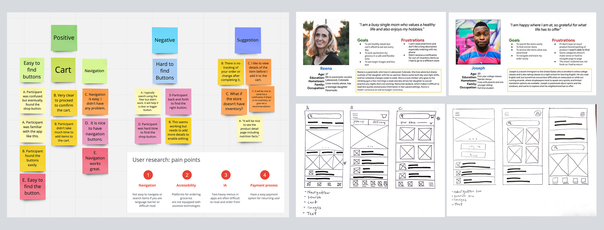
User research — affinity mapping, pain point analysis, user personas (Reena + Joseph), and paper wireframes
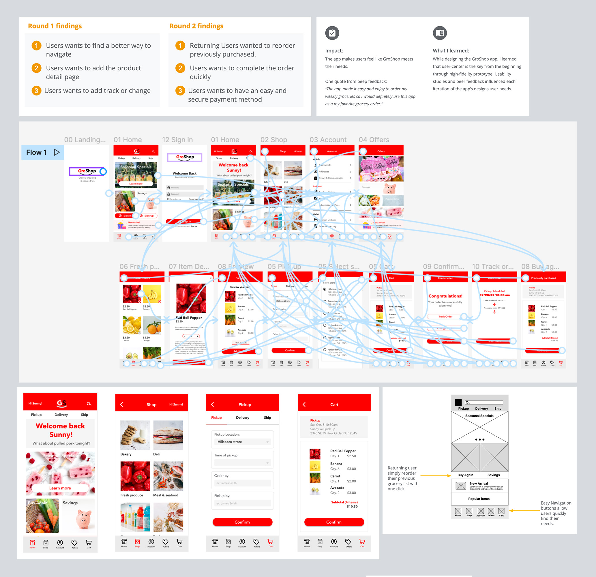
Round 1 + 2 usability findings, complete prototype flow, and final UI screens
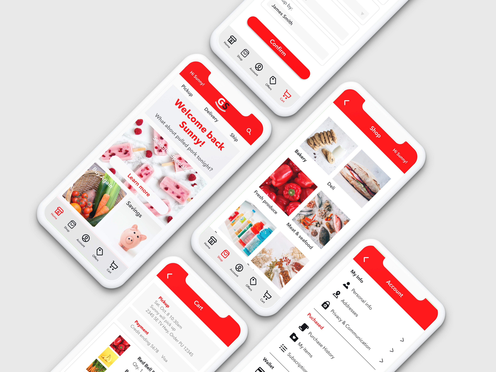
Final high-fidelity UI — home, shop, pickup, cart, and account screens
Overview
A rental search platform designed for short and long-term renters.
SweetRent is a responsive web and mobile rental platform that helps users find short-term and long-term rental properties. The design process started with paper sketches exploring five different layout options — then moved through digital wireframes, low-fidelity prototypes, usability testing, and a complete high-fidelity design for both desktop and mobile.
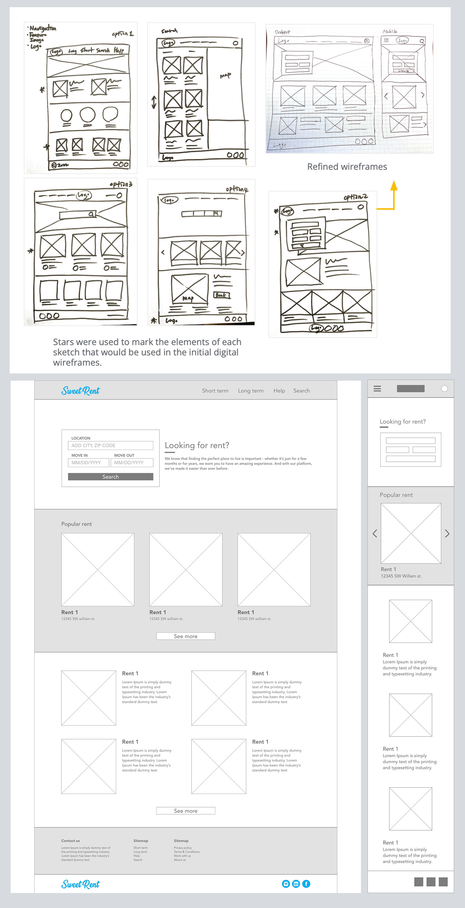
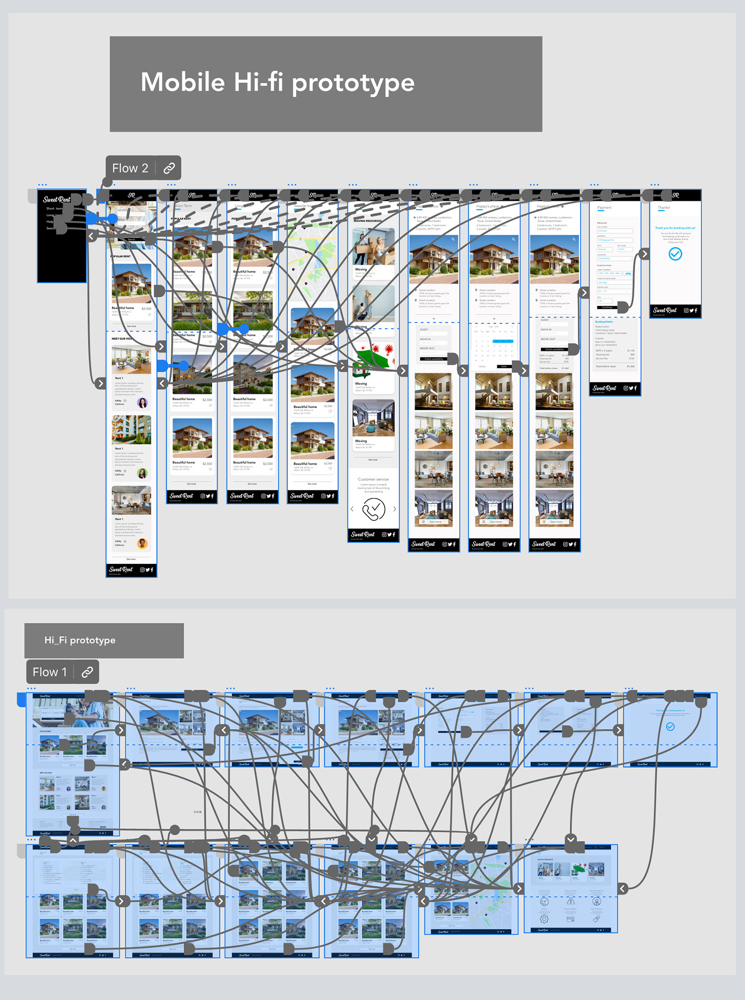
Left: Paper sketches (5 layout options) + digital wireframes for desktop and mobile. Right: Complete hi-fi prototype flows.
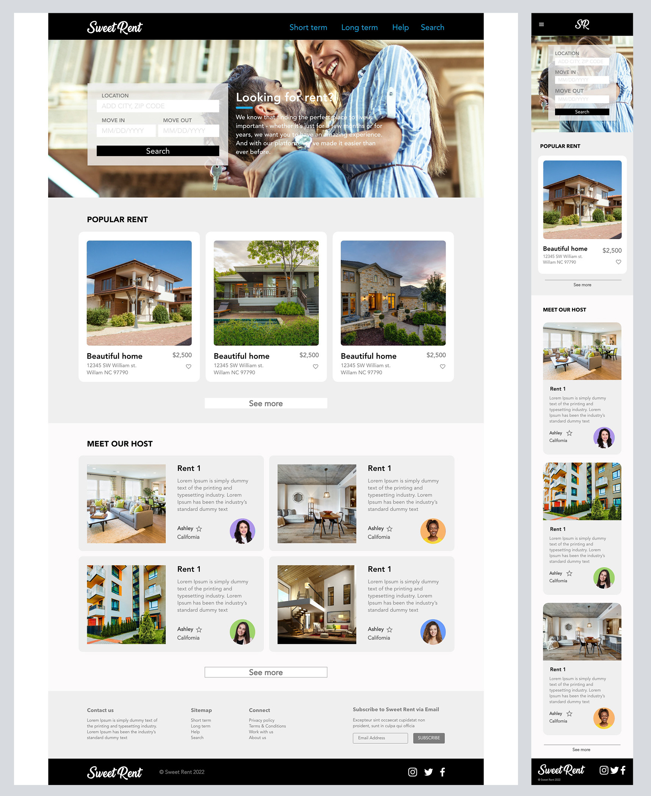
Final high-fidelity UI — full desktop layout and mobile responsive version
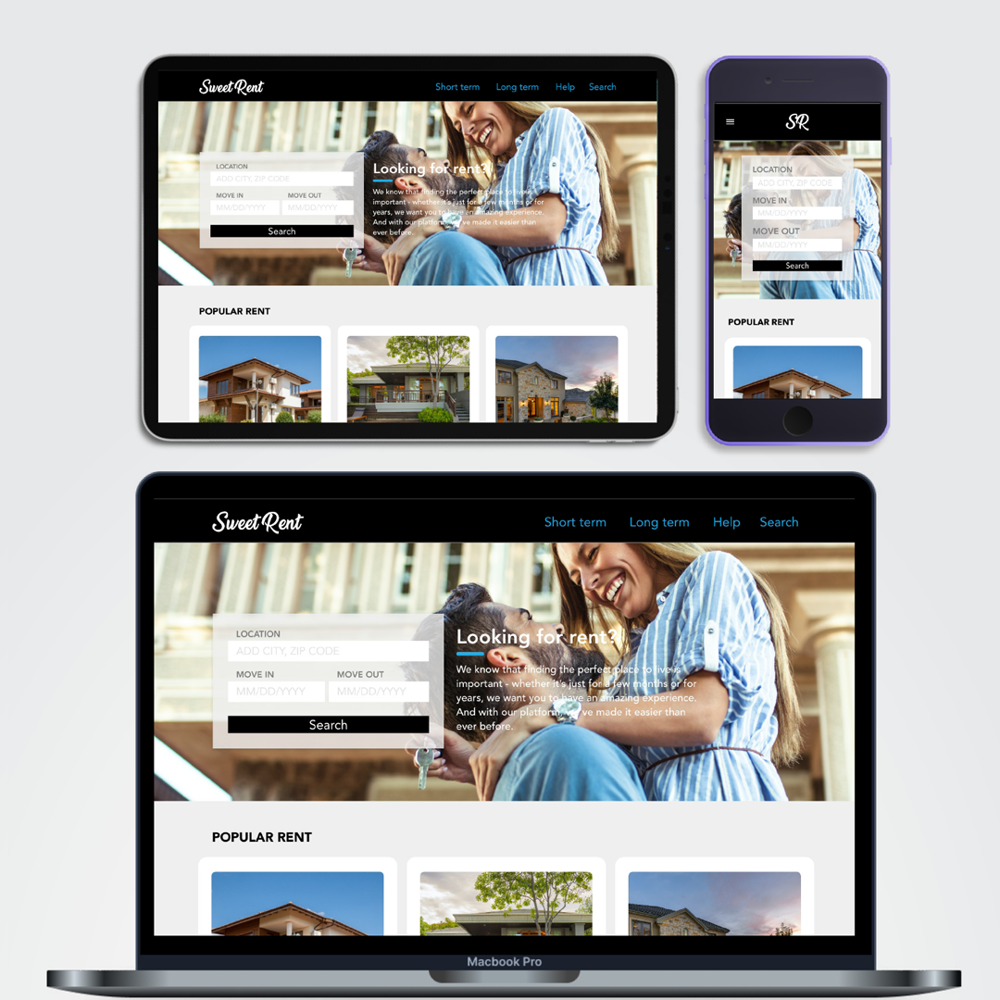
Responsive design across desktop, tablet, and mobile
Overview
A content platform built for teens — recipes, finance, and business.
HappyTeens is a responsive web and mobile platform designed to help teenagers aged 13–18 explore recipes, personal finance, and business ideas in an approachable, visually engaging format. The project required designing for a younger audience with specific accessibility and engagement needs — resulting in a bold yellow and white visual system with clear navigation and image-forward content layouts.
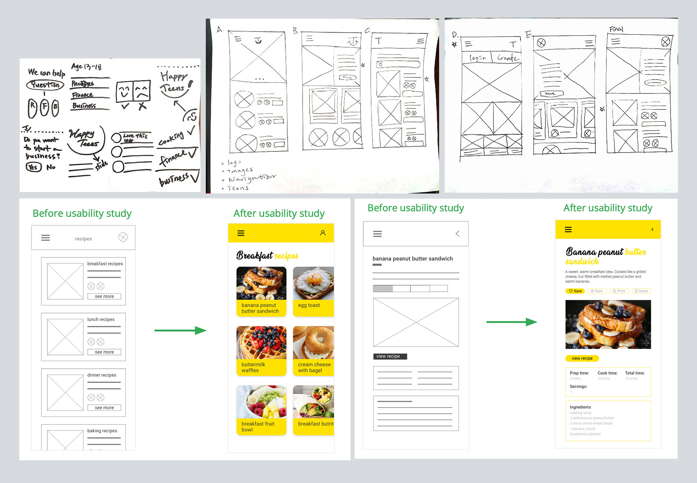
Paper sketches, early wireframes, and usability study before/after — recipe list and recipe detail pages
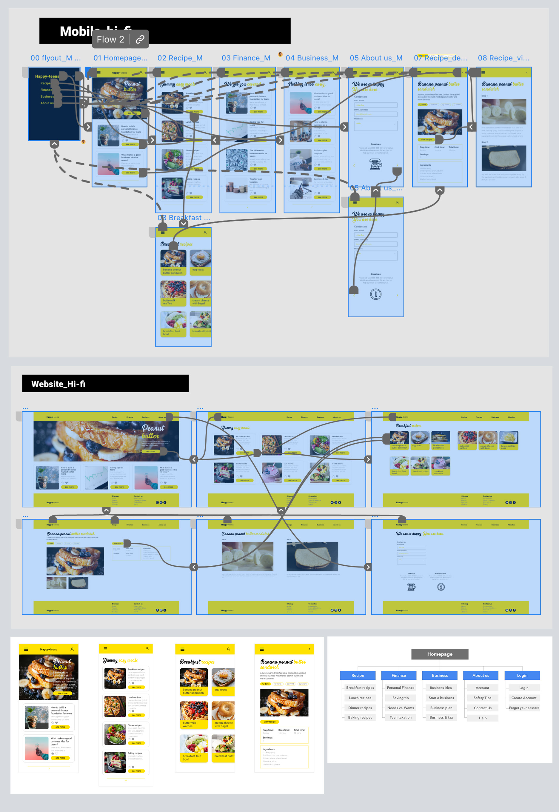
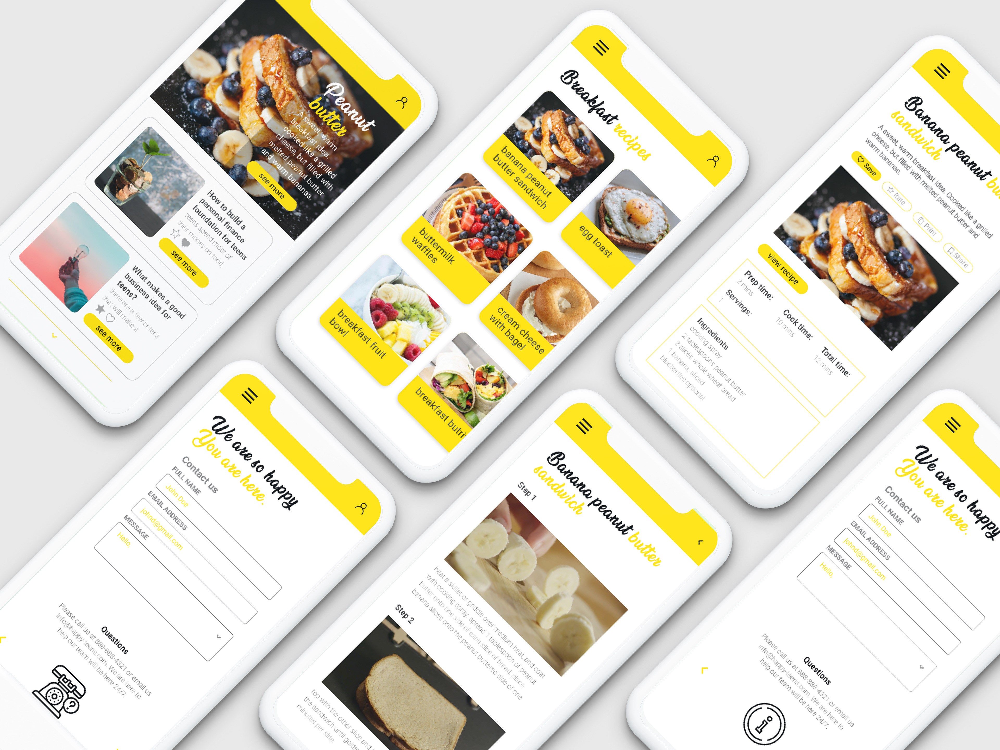
Left: Complete prototype flows (mobile + web). Right: Final mobile UI — home, recipe list, recipe detail, and contact.
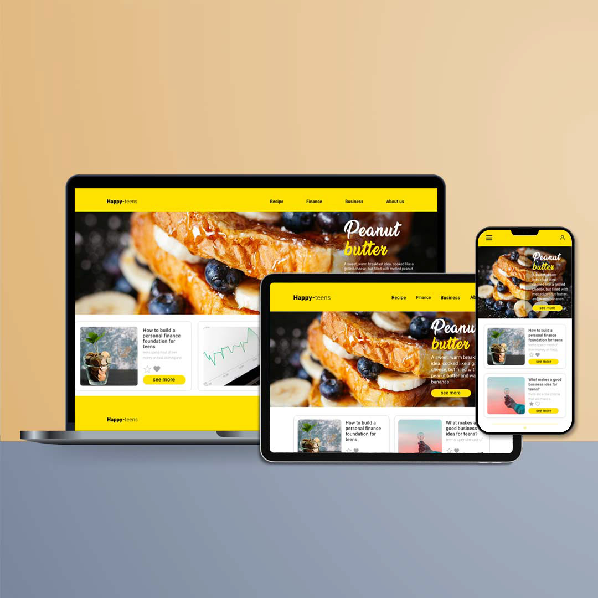
Responsive design across desktop, tablet, and mobile